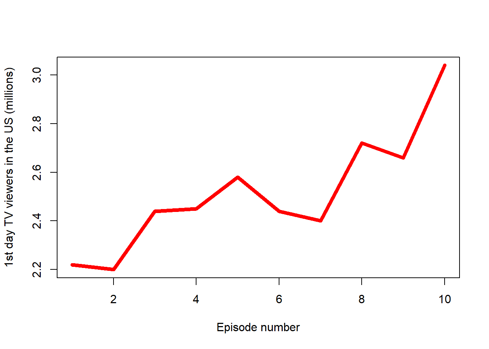

Daredevil (Assignment)
Daredevil
Marvel’s Daredevil is an American television series created by Drew Goddard for the streaming service Netflix, based on the Marvel Comics character Daredevil. It is set in the Marvel Cinematic Universe (MCU), acknowledging the continuity of the franchise’s films, and was the first Marvel Netflix series leading to the crossover miniseries The Defenders. Daredevil was produced by Marvel Television in association with ABC Studios. Steven S. DeKnight served as showrunner for the first season, with Doug Petrie and Marco Ramirez taking over as co-showrunners for the second, and Erik Oleson joining the series as showrunner for the third; Goddard served as a consultant for the series.
Charlie Cox stars as Matt Murdock / Daredevil, a blind lawyer-by-day who fights crime as a masked vigilante by night. Deborah Ann Woll, Elden Henson, Rosario Dawson, and Vincent D’Onofrio also star, with Toby Leonard Moore, Vondie Curtis-Hall, Bob Gunton, and Ayelet Zurer joining them for season one, Jon Bernthal, �lodie Yung, and Stephen Rider joining the cast for season two, and Joanne Whalley, Jay Ali and Wilson Bethel joining in season three. Daredevil entered development in late 2013, a year after the film rights to the character reverted to Marvel, with Goddard initially hired in December 2013. Cox was cast in May 2014, and the Daredevil costume was designed by Ryan Meinerding of Marvel Studios’ design team. The series was intended to be darker than other Marvel projects, intentionally avoiding crossovers with the wider MCU and focusing on a crime fiction style that was inspired by 1970s films. Design inspiration was taken from the Hell’s Kitchen setting of the comics, with filming taking place in New York City.
The first season was released in its entirety on Netflix on April 10, 2015, followed by the second on March 18, 2016, and the third on October 19, 2018. They were met with positive reviews, and received numerous accolades including several nominations for Primetime Creative Arts Emmy Awards. A spin-off series centered on Bernthal’s character Frank Castle / Punisher, titled The Punisher, was ordered by Netflix in April 2016. Netflix canceled Daredevil on November 29, 2018. It, along with the rest of Netflix’s Marvel series were removed from Netflix and added to Disney+ in March 2022, after Disney regained the license for them. Beginning in 2021, Cox and D’Onofrio reprised their roles as Murdock and Wilson Fisk / Kingpin in MCU projects produced by Marvel Studios, including a new series, Daredevil: Born Again, which is in development for Disney+. *** ***
The first season sees lawyer-by-day Matt Murdock use his heightened senses from being blinded as a young boy to fight crime at night on the streets of New York City’s Hell’s Kitchen neighborhood as Daredevil while uncovering a conspiracy of the criminal underworld being led by Wilson Fisk.[3] In the second season, Murdock continues to balance life as a lawyer and Daredevil, while crossing paths with Frank Castle / Punisher, a vigilante with far deadlier methods, as well as the return of an ex-girlfriend—Elektra Natchios.[4][5] In the third season, after Fisk is released from prison, Murdock, who has been missing for months following the events of The Defenders, reemerges as a broken man and must decide between hiding from the world as a criminal lawyer, or embracing his life as a hero vigilante.[6] ***
Finally, the episodes with the above-average viewership were:
| No. in season | Title | Directed by |
|---|---|---|
| 5 | “The Wolf and the Lion” | Brian Kirk |
| 8 | “The Pointy End” | Daniel Minahan |
| 9 | “Baelor” | Alan Taylor |
| 10 | “Fire and Blood” | Alan Taylor |